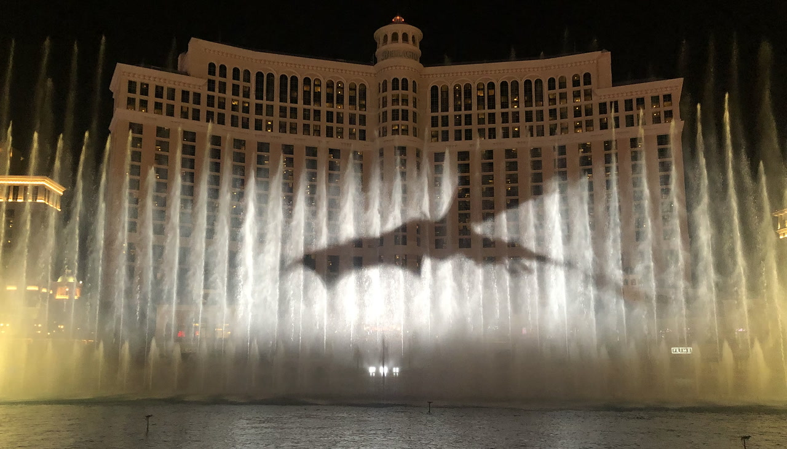

Site specific: Art that was created for a specific location; the artist knows of the location's characteristic before creating the art; and the piece would lose it meaning if it were to be removed from the site.
Art interventions: Art that interact with previously existing artwork, or art that intervene with a situation around the world with the intention of changing the status quo.
Similarity: Both artists have interactive arts that whose full meaning requires a feedbacks loop between audiences and the artwork.
Difference: Walter De Maria focuses on installation art that is site specific, his subject matters put emphasis on the viewers become aware of themselves. Bansky, on the other hand, often conduct performance art with emphasis on political and/or social commentary. His works also interact with audiences, but they are not site specific.
The sign-makers must be aware of the symbolism of each type of signs, e.g. red sign is associated with command, whereas green signs would remind viewers of directional sign on the highway. The message must be concise since the interaction between the message and viewers would likely be short. In term of tactics--Signs should be installed in place that allows viewers to observe the sign; otherwise, signs would be forgotten.
Bellagio hotel in Las Vegas has a water show that takes place periodically at the hotel's fountain. I think this can be considered a site specific art since the performance takes place at a specific site; the work is also a performance art since the audiences need to turn up at a specific time to see the show.
Photo: Game of Thrones debut at Bellagio's fountain
I have never been to Half Moon Bay in person, but when I looked up the site on Google Map I saw that there are graffitis being done on rocks and abandoned houses there. I think the activity is either a tag between teams, or an action similar to tourtist signing their name, messages, etc at famous tourist's attraction to remember their trip.
Kelvin - Whale Mural near his house in San Leandro
Jasmin - Donut below the crossing highway near SAP center
Jose - Pyramid to Mose in Miller Park, Oakland
{kind=link}